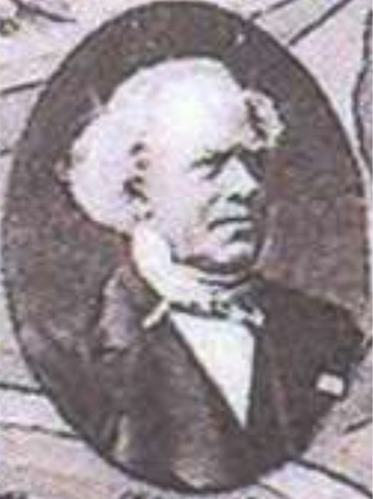
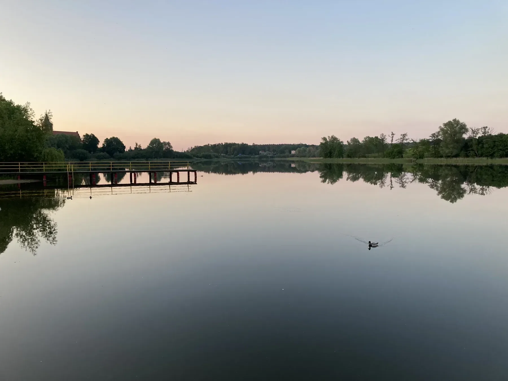
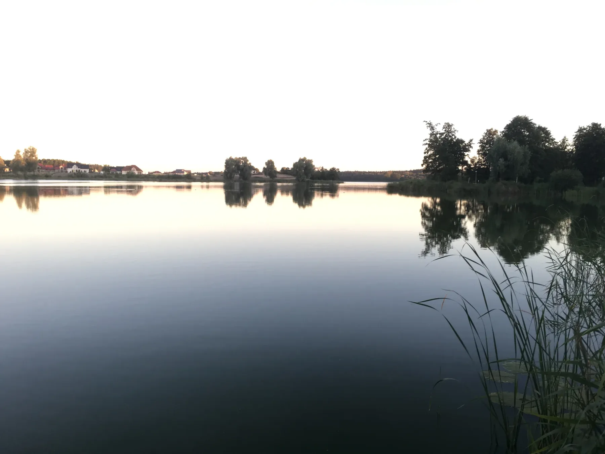

Kanał Elbląski - pomysł Steenke, turystyka Tetzlaffa
Najbardziej spektakularne są pochylnie, ale za nimi stoi historia ludzi, którzy najpierw zbudowali niezwykły system transportowy, a potem zamienili go także w atrakcję turystyczną.


Georg Jacob Steenke
Urodzony w 1801 r. w Królewcu inżynier opracował projekt połączenia jezior Oberlandu z Elblągiem. Największym wyzwaniem była różnica poziomów. Zamiast budować ogromną liczbę śluz, Steenke rozwinął system pochylni, na których statki są przewożone po lądzie na wózkach.
Adolf Tetzlaff
Urodził się w 1888 r. w dzisiejszych Siemianach. Pracował przy żegludze, a później stworzył własne przedsiębiorstwo. W 1912 r. jego firma rozpoczęła przewozy turystyczne po kanale. To piękne połączenie lokalnej historii: człowiek z Siemian był jednym z pionierów turystycznej żeglugi po tym systemie wodnym.
Iława - miasto, które wyrasta z Jezioraka
Iława jest naturalnym miejskim zapleczem pobytu w Siemianach, ale nie warto traktować jej tylko jako miejsca na zakupy. Miasto zostało lokowane w 1305 r. i od początku rozwijało się na południowym brzegu Jezioraka. Woda nadal organizuje jego przestrzeń: Mały Jeziorak leży praktycznie w centrum, a promenady prowadzą prosto w stronę Dużego Jezioraka.
Najstarszym zabytkiem jest gotycki kościół Przemienienia Pańskiego z XIV wieku, obok którego zachowały się fragmenty dawnych murów miejskich. Kilka minut dalej stoi reprezentacyjny ratusz z lat 1910-1912, a spacer wokół Małego Jezioraka pozwala połączyć zabytki, park, restauracje i wodę bez korzystania z samochodu.

Żeglarska Iława
Tomasz Lewandowski - z Jezioraka dookoła świata
Urodzony w Iławie Tomasz Lewandowski zdobywał żeglarskie doświadczenie na Jezioraku. W latach 2007-2008 na jachcie Luka samotnie opłynął Ziemię ze wschodu na zachód, bez zawijania do portów. Był pierwszym Polakiem i szóstym człowiekiem na świecie, który dokonał takiego rejsu w tym trudniejszym kierunku.
Rejs trwał ponad 391 dni. Dziś Lewandowski jest upamiętniony w Alei Żeglarskiej w Porcie Śródlądowym w Iławie - to dobre miejsce, żeby po spacerze nad Jeziorakiem zobaczyć, jak mocna jest tutaj lokalna tradycja żeglarska.
Susz - plaża, średniowieczny układ miasta i małe muzeum z dużą historią
Z Siemian do Susza jedzie się po coś innego niż do Iławy. Jest spokojniej i bardziej lokalnie. Latem najłatwiej zacząć od plaży nad Jeziorem Suskim, dużego placu zabaw i promenady, a potem wejść kilka ulic w głąb miasta.

Susz wyrósł na początku XIV wieku jako Rosenberg. Historyczne centrum zaplanowano na niewielkim wzniesieniu w formie niemal kolistej, otoczonej murem i fosą. Do dziś układ starego miasta pozostaje czytelny, a nad zabudową góruje średniowieczny kościół św. Antoniego. Już w 1924 r. przy jeziorze urządzono promenadę i park, więc dzisiejsze rekreacyjne oblicze Susza ma dłuższą historię.
Jeśli lubisz lokalne historie, zajrzyj do Muzeum Regionalnego w dawnej synagodze przy ul. Wąskiej 5. Muzeum prowadzi Stowarzyszenie Galea i pokazuje historię miasta oraz okolicy, w tym dużą makietę dawnego Susza i materiały związane z pałacem Finckenstein w Kamieńcu. Godziny zwiedzania są ograniczone, dlatego warto sprawdzić je przed wyjazdem.
Susz od 1991 roku buduje jedną z najdłuższych i najbardziej rozpoznawalnych tradycji triathlonowych w Polsce. Zawody przyciągają co roku ponad tysiąc uczestników, a pływanie w Jeziorze Suskim, kolarska trasa przez okolicę i bieg ulicami miasta na jeden weekend całkowicie zmieniają jego rytm. Dlatego określenie „stolica polskiego triathlonu” nie jest tu pustym hasłem, lecz częścią lokalnej tożsamości.
W parku miejskim, na zachodnim brzegu jeziora, zachowały się czytelne formy ziemne dawnego grodziska. Oficjalne opracowania archeologiczne opisują kwadratowy majdan o boku około 31 m, ślady wałów i fos. Miejsce wyrasta ze starszej, pruskiej warstwy osadniczej, choć w średniowieczu wiązano je także z dworem kapituły pomezańskiej. To ciekawy kontrast: kilka minut od plaży można stanąć na reliktach miejsca znacznie starszego niż dzisiejsze miasto.
Susz ma też własny archeologiczny kontekst skarbów i znalezisk. Badania regionu obejmują m.in. stanowiska oraz depozyty monet z okolic gminy Susz, a lokalne muzeum i Stowarzyszenie Galea od lat dokumentują tę starszą warstwę historii. Dlatego spacer po Suszu warto potraktować szerzej niż tylko obejście rynku: jezioro, grodzisko, średniowieczny układ miasta, dawna synagoga i muzeum tworzą całkiem spójną opowieść.
Jeszcze starszą warstwę historii przypominają tajemnicze kamienne posągi zwane babami pruskimi. Jeden z nich stał nad Jeziorem Suskim, na granicy Susza i Nipkowa, i lokalnie nazywano go „Mnichem”. Rzeźba przedstawia męską postać z rogiem do picia i mieczem. Na przełomie XIX wieku została wywieziona do Gdańska. Drugi podobny posąg związany jest z rejonem Bronowa, Różnowa i Susza. Ich dokładna funkcja nadal jest dyskutowana - mogły przedstawiać przodków, zmarłych albo postacie o znaczeniu kultowym.
Leśna sensacja z przymrużeniem oka
Wielka Stopa w Suszu
Czy w lasach koło Susza naprawdę grasuje Wielka Stopa? Ten fantastyczny, humorystyczny mockument bawi się konwencją filmu dokumentalnego: są relacje „świadków”, tropy tajemniczego stworzenia i zupełnie poważne śledztwo prowadzone w bardzo niepoważnej sprawie. Przy okazji film pokazuje jeziora, lasy i sportowe oblicze gminy. To promocja regionu z pomysłem - lekka, autoironiczna i znacznie bardziej pamiętna niż zwykły zestaw pocztówkowych ujęć.

Kamionka i jezioro Silm - kapitanowie ćwiczą na miniaturowych statkach
Kilka kilometrów od Iławy działa jedno z najbardziej niezwykłych miejsc w regionie. Na jeziorze Silm kapitanowie i piloci morscy uczą się manewrowania na wiernych modelach prawdziwych statków.
Badawczo-Szkoleniowy Ośrodek Manewrowania Statkami wykorzystuje jednostki w skali 1:24 i 1:16 oraz specjalnie przygotowany akwen z modelami portów, kanałów, śluz, torów wodnych i przejść pod mostem. To nie park miniatur, tylko profesjonalny ośrodek szkoleniowy, w którym warunki na małym jeziorze mają odtwarzać zjawiska występujące przy prowadzeniu dużych statków.
Samo miejsce nie jest typową atrakcją do swobodnego zwiedzania, ale historia o kapitanach z całego świata ćwiczących pod Iławą na „małych” tankowcach jest jedną z najbardziej zaskakujących ciekawostek Pojezierza Iławskiego.
Szymbark - dziesięć różnych wież i zamek większy, niż się spodziewasz
Na zdjęciach ruiny wyglądają ciekawie. Dopiero na miejscu widać skalę założenia. Zamek kapituły pomezańskiej powstawał od XIV wieku i ostatecznie otrzymał dziesięć wież, z których każda ma inny kształt. Park Krajobrazowy podkreśla, że rozmiarem ustępował w dawnym państwie zakonnym tylko Malborkowi.

Warownia była siedzibą prepozytów kapituły pomezańskiej, później przechodziła przez kolejne przebudowy i zmieniała się z twierdzy w reprezentacyjną rezydencję. W czasach nowożytnych należała m.in. do Finckensteinów. Po 1945 r. została spalona i pozostała trwałą ruiną.
To także miejsce filmowe. Na zamkowym dziedzińcu kręcono sceny do filmu Król Olch Volkera Schlöndorffa z Johnem Malkovichem. W otworach okiennych do dziś można wypatrzyć elementy pozostawione po filmowej scenografii.
Warto wiedzieć: według aktualnej informacji Gminy Iława zamek jest własnością prywatną i dziedziniec nie jest udostępniony do zwiedzania. Ruiny można oglądać z zewnątrz, spacerując wokół murów i dawnego parku nad Jeziorem Szymbarskim.
Wejdź do środka wirtualnie
Dziedziniec jest niedostępny, ale zamek można zwiedzić online
Wirtualny przewodnik prowadzi trasami wokół murów i pokazuje panoramy sferyczne z mostu, bramy, dziedzińca i wieży. To świetne uzupełnienie spaceru wokół ruin.
Kamieniec - Pruski Wersal i kwatera Napoleona
Kamieniec ma historię niewspółmiernie wielką do dzisiejszej skali miejscowości. Późnobarokowy pałac Finckensteinów wzniesiono w latach 1716-1720 dla Albrechta Konrada Fincka von Finckensteina. Rozmach rezydencji sprawił, że zaczęto nazywać ją Pruskim albo Wschodniopruskim Wersalem.

Najbardziej niezwykły rozdział rozpoczął się 1 kwietnia 1807 r. Napoleon Bonaparte urządził tu kwaterę podczas kampanii przeciwko Prusom i Rosji i pozostał do 6 czerwca. Z Kamieńca kierował sprawami imperium, przyjmował poselstwa i planował dalszą kampanię. To tutaj przebywała z nim również Maria Walewska. Z pobytem cesarza łączą się także wątki powstawania Księstwa Warszawskiego i Wolnego Miasta Gdańska.
Sam pałac był częścią rozległego zespołu z oficynami, folwarkiem, parkiem i parkowymi pawilonami. Po II wojnie światowej rezydencja została splądrowana i zniszczona, a dziś jej monumentalne mury są jednym z najbardziej przejmujących śladów dawnej architektury rezydencjonalnej regionu.
Warto zwrócić uwagę również na to, co ocalało poza Kamieńcem: cztery barokowe rzeźby pochodzące z pałacu stoją dziś w centrum Iławy. Jeśli połączysz oba miejsca jednego dnia, historia zaczyna się składać w całość.